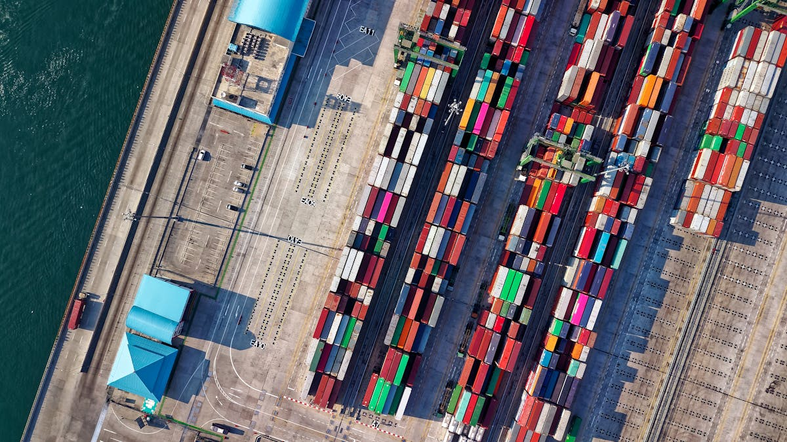
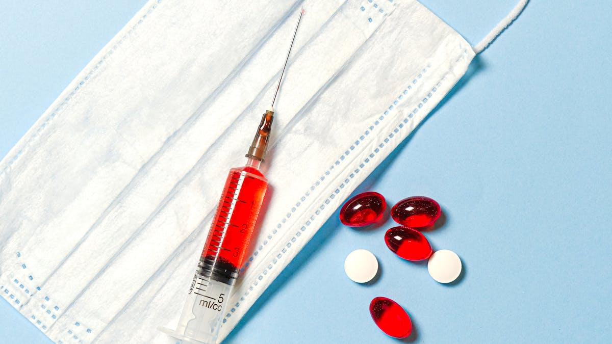

April 2026
Tuas Is Expanding. Asia Suppliers Need to Be Ready.
The opportunity in Singapore's pharma manufacturing cluster is real — but entry requires more than a product catalogue.
Astraxis Insights
Source-backed briefs on Singapore market access, pharma logistics, supplier readiness, and regional sourcing signals.
April 2026
The opportunity in Singapore's pharma manufacturing cluster is real — but entry requires more than a product catalogue.

January 2026
US tariffs, China supply chain pressure, and a flight to stable sourcing — what it means for procurement teams in Singapore.
December 2025
When a major global supplier scales up in Singapore, it reflects demand — and raises the bar for everyone in the supply chain.

September 2025
What procurement and quality teams in Tuas are now expecting from regional suppliers — and why the old approach is no longer enough.

April 2026
Why Singapore's partner network matters for fast, trusted pharma sourcing and service.

March 2026
Biopharma logistics is increasingly judged by temperature assurance, traceability, and intervention speed.

February 2026
For Singapore market entry, product fit is only part of the requirement.